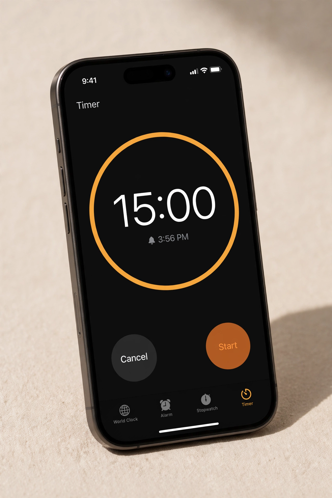

The Pre-Bolus Trick I Learned on TikTok: Your Glucose Number Is Your Wait Time (2026)
I have had type 1 diabetes for 20 years. Two days ago, a TikTok taught me something about mealtime insulin timing that nobody had ever put this simply: your glucose number tells you how many minutes to wait between bolusing and your first bite.
The whole trick fit on one screen: your CGM tells you your pre-bolus wait time. At 150, wait 15 minutes. At 184, wait 18. At 240, wait 24. Take your glucose number, divide by 10, and that is roughly how many minutes to wait between bolusing and eating.
I have been pre-bolusing for years. Every diabetes educator teaches some version of "bolus 15 to 20 minutes before you eat." But I had never heard it framed as a number I already have on my screen. No math, no guessing, no fixed rule that ignores whether I am at 110 or 260. Just: look at the number, move the decimal one place left, wait.
The Trick, Simply
Pre-bolusing means taking your mealtime insulin before you start eating instead of bolusing as the food shows up. Rapid-acting insulin takes around 15 minutes to really get going, so if you bolus and immediately eat, the food wins the race and your blood sugar spikes before the insulin catches up. Waiting gives the insulin a head start.
The TikTok version just personalizes the wait:
- Glucose at 120: wait about 12 minutes
- Glucose at 150: wait about 15 minutes
- Glucose at 200: wait about 20 minutes
- Glucose at 250: wait about 25 minutes
The logic is simple. The higher you are, the more of a head start your insulin needs, because you are asking it to do two jobs at once: bring down the high you already have and cover the food that is coming. When you are in range, the standard 10 to 15 minutes is plenty.
Our free calculator works out exactly how much insulin and how many supplies to pack for your trip length, with a safety buffer built in.
Build my packing list →How to Actually Do It
It is a three-step routine:
- Check your glucose. Look at your CGM or meter right before the meal.
- Bolus for the meal, then wait roughly your glucose divided by 10, in minutes.
- Eat. Keep an eye on your CGM while you wait.
That is the whole thing. Now, do you need a timer? Honestly, no. I have pre-bolused for years and I have never once set a timer for it. But if you are the type who tells yourself "I will wait a bit" and then eats two minutes later, a phone timer turns the intention into an actual habit. Use one until the wait feels natural, then drop it.

The Caveats That Matter
This is a community trick, not medical advice, and it has edges. The important ones:
- Trend arrows beat the number. The divide-by-10 trick assumes your glucose is fairly steady. If your CGM shows you dropping, shorten the wait or skip it entirely. If you are rising fast, you might wait a little longer. The arrow tells you where you are headed.
- Never pre-bolus and wait when you are low. If you are low or sliding toward low, eat first. Waiting on insulin when you are already dropping is how a small low becomes a scary one.
- Watch for the drop while you wait. At 240 with 24 minutes of waiting, the insulin can start pulling you down before the food arrives. That is the point, but keep your CGM visible and have fast carbs nearby, the same as any pre-bolus.
- This is for rapid-acting mealtime insulin. The timing logic only applies to the fast stuff you bolus for food, not basal insulin.
Why I Care About This for Travel Days
On a normal day, my meals happen roughly on schedule. On travel days, nothing does. Flights get delayed, restaurants take 40 minutes to bring food, and I end up eating at weird hours in weird places. That chaos is exactly when after-meal spikes are worst, because I am bolusing whenever food appears and hoping for the best.
A dead-simple rule I can do from my CGM screen fits travel perfectly. No extra gear, no calculations, nothing to remember except: look at the number, move the decimal, wait. If it flattens even half of my travel-day spikes, it was worth the 30 seconds I spent learning it on TikTok.
Get a personalized packing list for your trip length, devices, and destination. Free, takes two minutes.
Build my packing list →Frequently Asked Questions
What is pre-bolusing?
Pre-bolusing means taking your mealtime insulin before you start eating, instead of bolusing as the food arrives or after you finish. Giving the insulin a head start helps it meet the food as your blood sugar rises, which flattens the after-meal spike.
How long should I wait between bolusing and eating?
Diabetes educators generally recommend 15 to 20 minutes for rapid-acting insulin. The TikTok trick makes it personal: take your current glucose number, divide by 10, and wait roughly that many minutes. At 150, wait about 15 minutes. At 200, wait about 20. It is a rough rule of thumb, not a prescription.
Should I pre-bolus if my blood sugar is low?
No. If you are low or dropping toward low, eat first and bolus after, or follow whatever correction plan your care team gave you. Pre-bolusing and waiting only makes sense when your glucose is in range or high and steady.
Do CGM trend arrows change the wait time?
Yes. The glucose-divided-by-10 trick assumes your reading is fairly steady. If your CGM shows you dropping, shorten the wait or skip it. If you are rising fast, you might wait a bit longer. The arrow is telling you where you are headed, and the wait should match that, not just the current number.
Is the pre-bolus wait-time trick medical advice?
No. It is a community trick shared by people with diabetes, and it is not a substitute for your care team's guidance. Insulin timing affects everyone differently, so talk to your endocrinologist or diabetes educator before changing your mealtime routine.